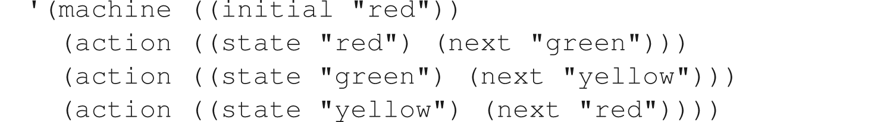
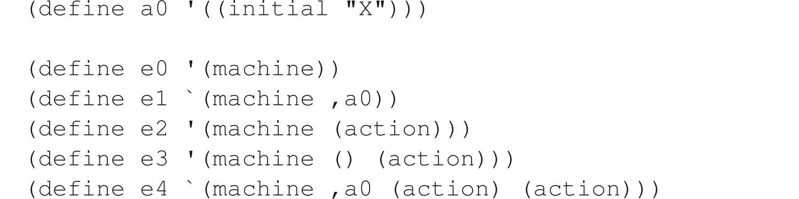
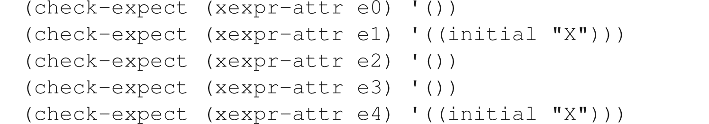
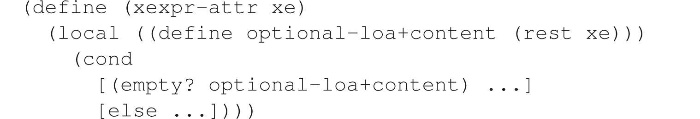
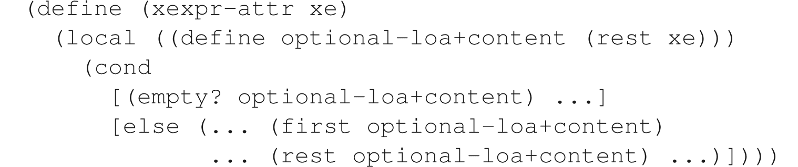
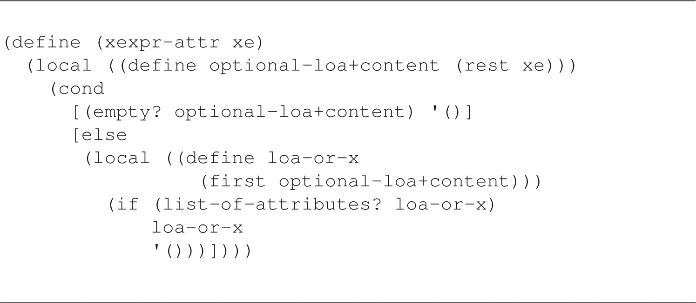
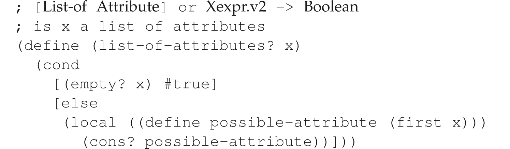

22.1 XML as S-expressions
The most basic piece of XML data looks like this:
<machine> </machine>
It is called an element and “machine” is the name of the element. The two parts of the element are like parentheses that delimit the content of an element. When there is no content between the two parts—other than white space—XML allows a short-hand:
<machine />
But, as far as we are concerned here, this short-hand is equivalent to the explicitly bracketed version.
Racket’s xml library represents XML with structures as well as S-expressions.
From an S-expression perspective, an XML element is a named pair of parentheses that surround some content. And indeed, representing the above with an S-expression is quite natural:
'(machine)
This piece of data has the opening and closing parentheses, and it comes with space to embed content.
Here is a piece of XML data with content:
<machine><action /></machine>
Remember that the <action /> part is a short-hand, meaning we are really looking at this piece of data:
<machine><action></action></machine>
In general, the content of an XML element is a series of XML elements:
<machine><action /><action /><action /></machine>
Stop! Expand the short-hand for <action /> before you continue.
The S-expression representation continues to look simple. Here is the first one:
'(machine (action))
And this is the representation for the second one:
'(machine (action) (action) (action))
When you look at the piece of XML data with a sequence of three <action /> elements as its content, you realize that you may wish to distinguish such elements from each other. To this end, XML elements come with attributes. For example,
<machine initial="red"></machine>
is the “machine” element equipped with one attribute whose name is “initial” and whose value is “red” between string quotes. Here is a complex XML element with nested elements that have attributes, too:
<machine initial="red">
<action state="red" next="green" />
<action state="green" next="yellow" />
<action state="yellow" next="red" />
</machine>
We use blanks, indentation, and line breaks to make the element readable, but this white space has no meaning for our XML data here.
XML is 40 years younger than S-expressions.
Naturally, S-expressions for these “machine” elements look much like their XML cousins:
'(machine ((initial "red")))
To add attributes to an element, we use a list of lists where each of the latter contains two items: a symbol and a string. The symbol represents the name of the attribute and the string its value. This idea naturally applies to complex forms of XML data, too:

For now note how the attributes are marked by two opening parentheses and the remaining list of (representations of) XML elements has one opening parenthesis.
You may recall the idea from intermezzo 2, which uses S-expressions to represent XHTML, a special dialect of XML. In particular, the intermezzo shows how easily a programmer can write down nontrivial XML data and even templates of XML representations using backquote and unquote. Of course, chapter 21.1 points out that you need a parser to determine whether any given S-expression is a representation of XML data, and a parser is a complex and unusual kind of function.
Nevertheless, we choose to go with a representation of XML based on S-expressions to demonstrate the usefulness of this old, poetic idea in practical terms. We proceed gradually to work out a data definition, putting iterative refinement to work. Here is a first attempt:
; An Xexpr.v0 (short for X-expression) is a one-item list:
; (cons Symbol '())
This is the “named parentheses” idea from the beginning of this section. Equipping this element representation with content is easy:
; An Xexpr.v1 is a list:
; (cons Symbol [List-of Xexpr.v1])
The symbolic name becomes the first item on a list that otherwise consists of XML element representatives.
The last refinement step is to add attributes. Since the attributes in an XML element are optional, the revised data definition has two clauses:
; An Xexpr.v2 is a list:
; -- (cons Symbol Body)
; -- (cons Symbol (cons [List-of Attribute] Body))
; where Body is short for [List-of Xexpr.v2]
; An Attribute is a list of two items:
; (cons Symbol (cons String '()))
Exercise 363. All elements of Xexpr.v2 start with a Symbol, but some are followed by a list of attributes and some by just a list of Xexpr.v2s. Reformulate the definition of Xexpr.v2 to isolate the common beginning and highlight the different kinds of endings.
Eliminate the use of List-of from Xexpr.v2. 
Exercise 364. Represent this XML data as elements of Xexpr.v2:
1. <transition from="seen-e" to="seen-f" />
2. <ul><li><word /><word /></li><li><word /></li></ul>
Which one could be represented in Xexpr.v0 or Xexpr.v1?
Exercise 365. Interpret the following elements of Xexpr.v2 as XML data:
1. '(server ((name "example.org")))
2. '(carcas (board (grass)) (player ((name "sam"))))
3. '(start)
Which ones are elements of Xexpr.v0 or Xexpr.v1?
Roughly speaking, X-expressions simulate structures via lists. The simulation is convenient for programmers; it asks for the least amount of keyboard typing. For example, if an X-expression does not come with an attribute list, it is simply omitted. This choice of data representation represents a trade-off between authoring such expressions manually and processing them automatically. The best way to deal with the latter problem is to provide functions that make X-expressions look like structures, especially functions that access the quasi-fields:
• xexpr-name, which extracts the tag of the element representation;
• xexpr-attr, which extracts the list of attributes; and
• xexpr-content, which extracts the list of content elements.
Once we have these functions, we can use lists to represent XML yet that act as if they were instances of a structure type.
These functions parse S-expressions, and parsers are tricky to design. So let’s design them carefully, starting with some data examples:

The first definition introduces a list of attributes, which is reused twice in the construction of X-expressions. The definition of e0 reminds us that an X-expression may not come with either attributes or content. You should be able to explain why e2 and e3 are basically equivalent.
Next we formulate a signature, a purpose statement, and a header:
; Xexpr.v2 -> [List-of Attribute]
; retrieves the list of attributes of xe
(define (xexpr-attr xe) '())
Here we focus on xexpr-attr; we leave the other two as exercises.
Making up functional examples requires a decision concerning the extraction of attributes from X-expressions without any. While our chosen representation completely omits missing attributes, we must supply '() for the structure-based representation of XML. The function therefore produces '() for such X-expressions:

It is time to develop the template. Since the data definition for Xexpr.v2 is complex, we proceed slowly, step-by-step. First, while the data definition distinguishes two kinds of X-expressions, both clauses describe data constructed by consing a symbol onto a list. Second, what differentiates the two clauses is the rest of the list and especially the optional presence of a list of attributes. Let’s translate these two insights into a template:

The local definition chops off the name of the X-expression and leaves the remainder of the list, which may or may not start with a list of attributes. The key is that it is just a list, and the two cond clauses indicate so. Third, this list is not defined via a self-reference but as the optional cons of some attributes onto a possibly empty list of X-expressions. In other words, we still need to distinguish the two usual cases and extract the usual pieces:

At this point, we can already see that recursion is not needed for the task at hand. So, we switch to the fifth step of the design recipe. Clearly, there are no attributes if the given X-expression comes with nothing but a name. In the second clause, the question is whether the first item on the list is a list of attributes or just an Xexpr.v2. Because this sounds complicated, we make a wish:
; [List-of Attribute] or Xexpr.v2 -> ???
; determines whether x is an element of [List-of Attribute]
; #false otherwise
(define (list-of-attributes? x)
#false)
With this function, it is straightforward to finish xexpr-attr; see figure 126. If the first item is a list of attributes, the function produces it; otherwise there are no attributes.

Figure 126: The complete definition of xexpr-attr
For the design of list-of-attributes?, we proceed in the same manner and get this definition:

We skip the details of the design process because they are unremarkable. What is remarkable is the signature of this function. Instead of specifying a single data definition as possible inputs, the signature combines two data definitions separated by the English word “or.” In ISL+ such an informal signature with a definite meaning is acceptable on occasion.
Exercise 366. Design xexpr-name and xexpr-content.
Exercise 367. The design recipe calls for a self-reference in the template for xexpr-attr. Add this self-reference to the template and then explain why the finished parsing function does not contain it.
Exercise 368. Formulate a data definition that replaces the informal “or” signature for the definition of the list-of-attributes? function.
Exercise 369. Design find-attr. The function consumes a list of attributes and a symbol. If the attributes list associates the symbol with a string, the function retrieves this string; otherwise it returns #false. Look up assq and use it to define the function.
For the remainder of this chapter, Xexpr refers to Xexpr.v2. Also, we assume xexpr-name, xexpr-attr, and xexpr-content are defined. Finally, we use find-attr from exercise 369 to retrieve attribute values.